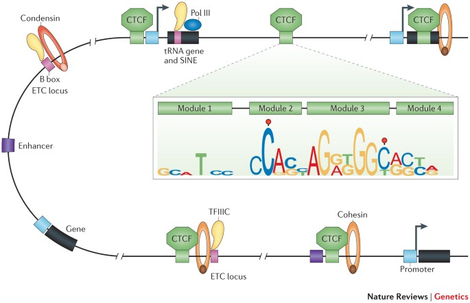
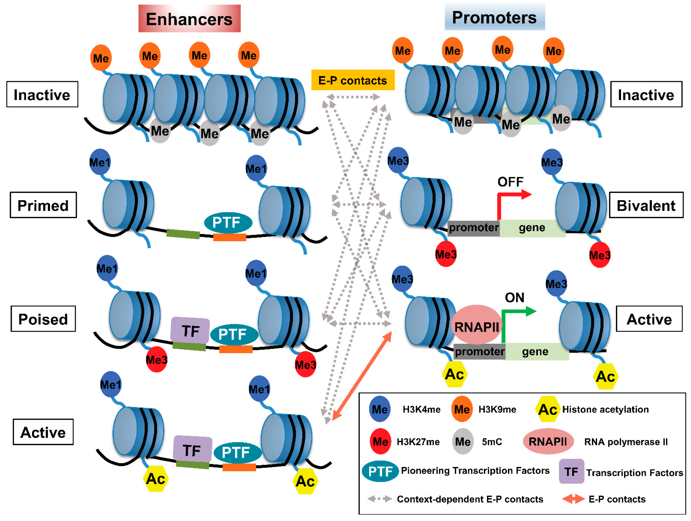
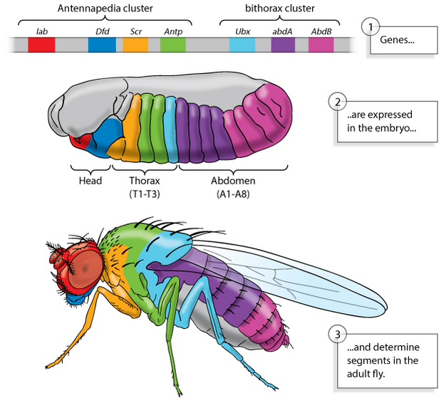
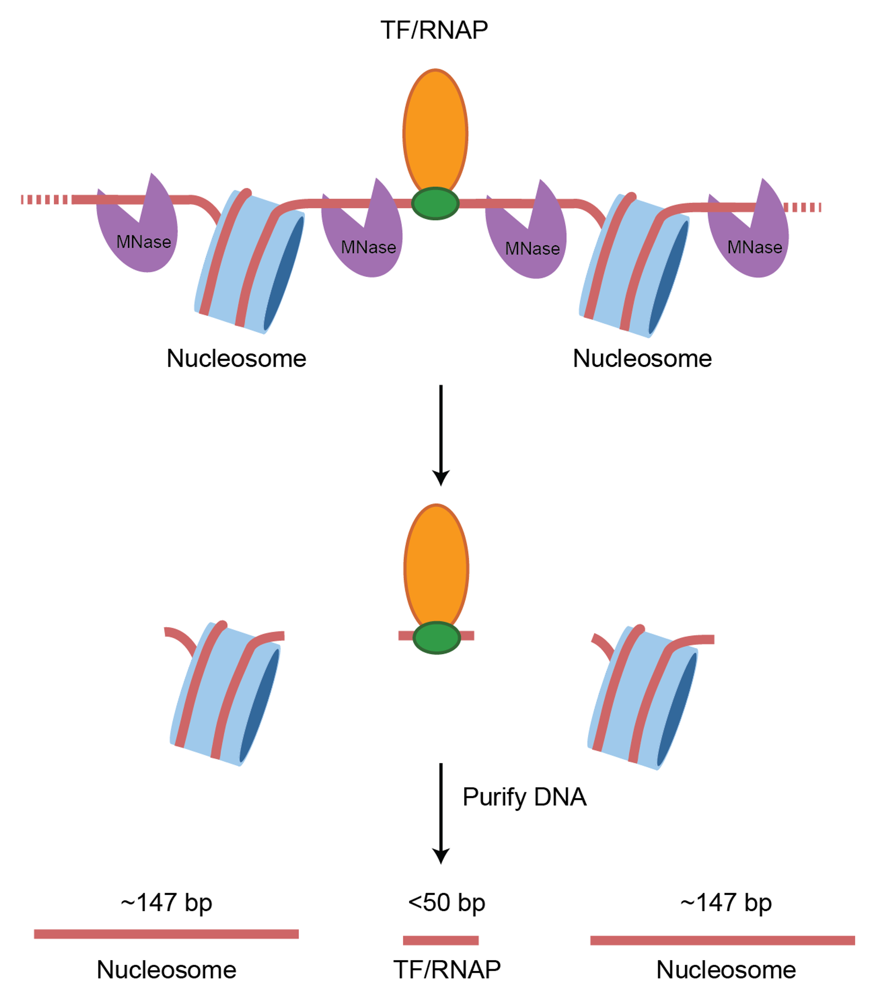
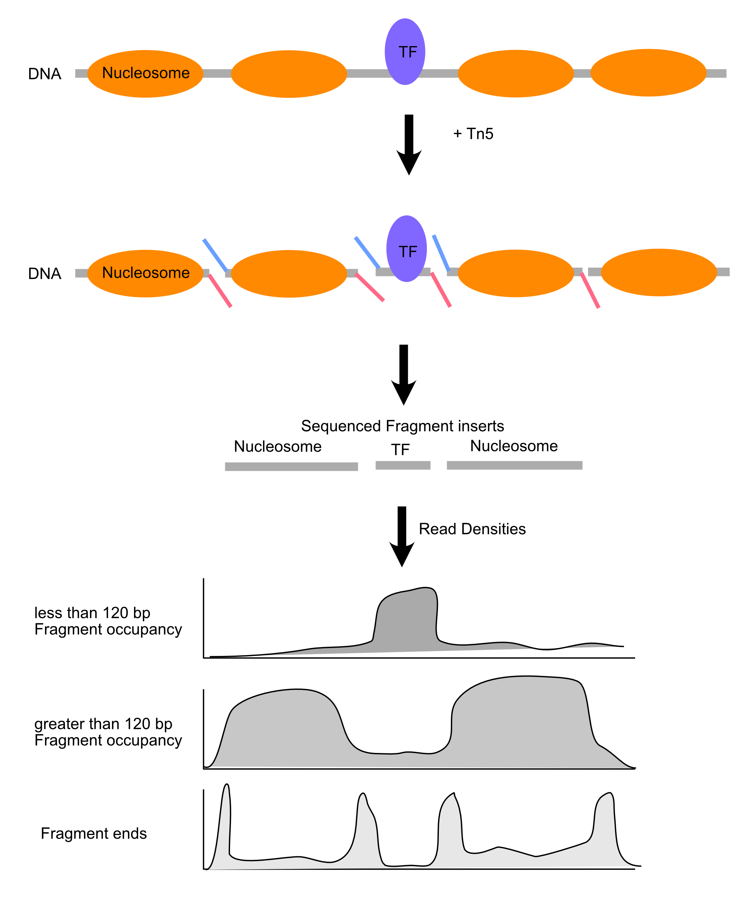
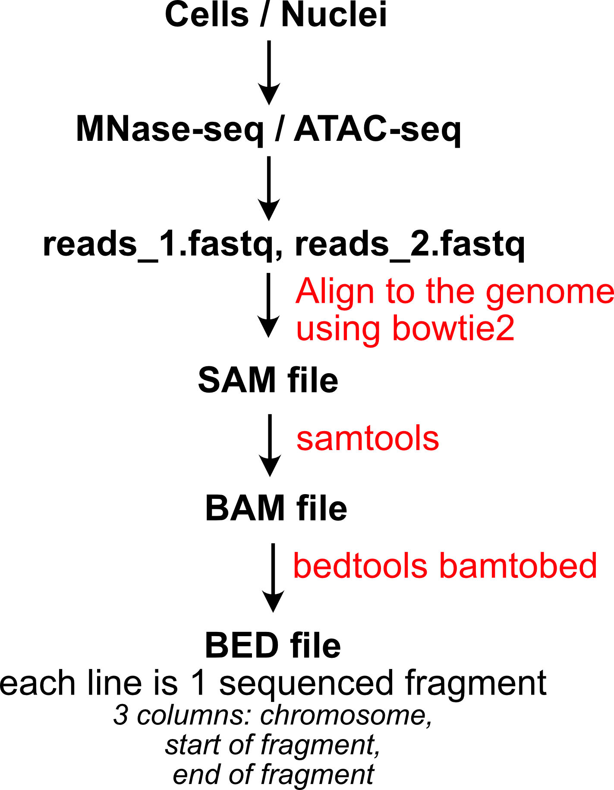
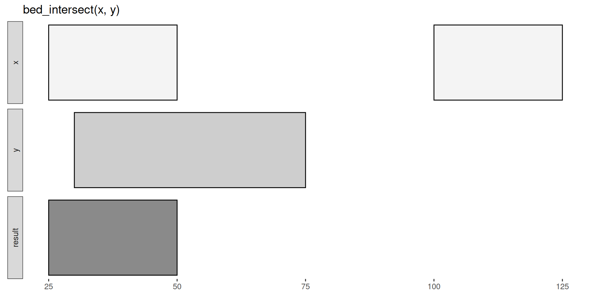
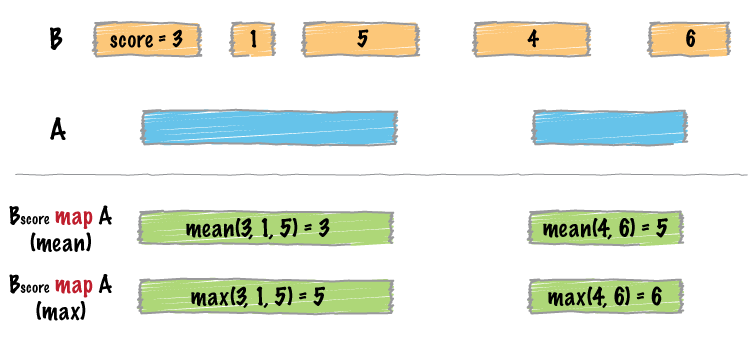

Mapping chromatin structure and transactions
RNA Bioscience Initiative | CU Anschutz
2025-09-23
Final Projects
Throughout the DNA and RNA blocks we will refer to several data sets that might be good starting points for your final project (worth 20% of your grade).
We will ask for a sketch of the rough plan for a final project by the end of week 7 (Wed Oct 8). In addition, if you plan to work in a group, we’d like to know who you will be working with.
Final projects will be due Monday Oct 27. We will schedule short (5 minute) talks by each group on Oct 27 and Oct 29.
Gene regulation by chromatin
Chromatin organization regulates genome compaction and gene expression



DNA accessibility drives all biochemical transactions on the genome
- Transcription Initiation
- Transcription Elongation
- DNA Repair
- Initiation of DNA Replication
- Recombination
- Viral Integration
Mapping & measurement are first steps toward understanding.
Before genome-wide DNA accessibility measurements, we knew about chromatin transactions at only a handful of loci.
This was a classic “keys under the lamppost” situation, leading to general models of chromatin-based gene regulation.
Using micrococcal nuclease (MNase) to map chromatin
- Micrococcal nuclease is an endo/exonuclease from Staphylococcus aureus
- Efficient, multiple turnover enzyme that digests accessible DNA (& RNA)
- Dependent on calcium ions

Using ATAC to map chromatin
- Tn5 transposase catalyzes “cut-and-paste” insertion of DNA into a target
- In ATAC (“Assay for Transposase-Accessible Chromatin”), the transposase enzymes are loaded with DNA sequencing adaptors (blue and red in the image), so the products of transposition are ready to PCR.
- Single turnover enzyme that acts on accessible DNA.
- Requires about ~60 bp of accessible for transposition.

Chromatin mapping experimental summary
| DNase-seq | ATAC-seq | MNase-seq | |
|---|---|---|---|
| Genome representation | Most active regions | Most active regions | Whole genome |
| Ease of experiment | Very difficult | Easy peasy | One day’s work |
| What is profiled? | Accessible DNA, “footprints” at low cut frequency | Accessible DNA. Not really “footprints”, single turnover enzyme, so fragments are not informative | Protections of TFs and nucleosomes |
Experimental details
Data structures and tools used for analysis of chromatin mapping experiments
Experimental workflow
BED format
- Contains information about genomic intervals.
- Used to represent genomic features (exons, introns, transcription start sites)
- First 3 columns are:
chrom,start,end - Next 3 are:
name,score,strand. Strand can be+,-, or.(no strand)
chr7 127473530 127474697 Pos3 0 +
chr7 127474697 127475864 Pos4 0 +
chr7 127475864 127477031 Neg1 0 -
chr7 127477031 127478198 Neg2 0 -WIG / bedGraph
WIG and bedGraph store interval signals.
- Genome sequencing coverage
- Coverage of reads from MNase / ATAC-seq
Many studies will provide genome-scale data in these formats
chr19 49302000 49302300 -1.0
chr19 49302300 49302600 -0.75
chr19 49302600 49302900 -0.50
chr19 49302900 49303200 -0.25Note
bigWig is a binary form of WIG, used to store large amounts of signal in a compressed, indexed format.
Interval analysis
The primary tool in the genome interval analysis is BEDtools – it’s the Swiss-army knife of internal analysis.
We will use an R package called valr that provides the same tools, but you don’t need to leave RStudio. valr provides the same tools for reading and manipulating genome intervals.
bed_intersect() is a fundamental operation. It identifies intervals from two tibbles that intersect and reports their overlaps.
Let’s take a look at that it does.

bed_intersect() example
First, we’ll define some example intervals in x and y.
Visual representation of the intersecting intervals.
Tibble of the intersecting intervals.
# A tibble: 1 × 6
chrom start.x end.x start.y end.y .overlap
<chr> <dbl> <dbl> <dbl> <dbl> <int>
1 chr1 25 50 30 75 20Note
Note the addition of .x and .y suffixes to disamguate the input sources.
read_bed() example
Rse read_bed() to load genome annotations and signals.
Note
You’ll also use read_bedgraph() and read_bigwig() on your problem set.
What is in snps and genes?
# A tibble: 10,000 × 6
chrom start end name score strand
<chr> <int> <int> <chr> <chr> <chr>
1 chr22 16053247 16053248 rs587721086 0 +
2 chr22 16053443 16053444 rs80167676 0 +
3 chr22 16055964 16055965 rs587706951 0 +
4 chr22 16069373 16069374 rs2154787 0 +
5 chr22 16069782 16069783 rs1963212 0 +
6 chr22 16100513 16100514 rs8140563 0 +
7 chr22 16114622 16114623 rs558374111 0 +
8 chr22 16115181 16115182 rs567521927 0 +
9 chr22 16115377 16115378 rs538733846 0 +
10 chr22 16121639 16121640 rs544560983 0 +
# ℹ 9,990 more rows# A tibble: 732 × 6
chrom start end name score strand
<chr> <int> <int> <chr> <chr> <chr>
1 chr22 16150259 16193004 AK022914 8 -
2 chr22 16162065 16172265 LINC00516 3 +
3 chr22 16179617 16181004 BC017398 1 -
4 chr22 16239287 16239327 DQ590589 1 +
5 chr22 16240245 16240277 DQ573684 1 -
6 chr22 16240300 16240340 DQ595048 1 -
7 chr22 16241085 16241125 DQ590589 1 +
8 chr22 16242753 16242785 DQ573684 1 -
9 chr22 16243382 16243414 DQ573684 1 -
10 chr22 16243447 16243487 DQ587539 1 -
# ℹ 722 more rowsInterval manipulation
Let’s find and characterize intergenic SNPs. We’ll use the tools bed_substract() and bed_closest(). Take a look and their examples in the valr documentation to see what they do.
Here, we’ll ask the question: “Which SNPs are intergenic, and how far are they from the nearest gene?”
Take a look at the intergenic and nearby objects in the console.
# A tibble: 4,786 × 6
chrom start end name score strand
<chr> <int> <int> <chr> <chr> <chr>
1 chr22 16053247 16053248 rs587721086 0 +
2 chr22 16053443 16053444 rs80167676 0 +
3 chr22 16055964 16055965 rs587706951 0 +
4 chr22 16069373 16069374 rs2154787 0 +
5 chr22 16069782 16069783 rs1963212 0 +
6 chr22 16100513 16100514 rs8140563 0 +
7 chr22 16114622 16114623 rs558374111 0 +
8 chr22 16115181 16115182 rs567521927 0 +
9 chr22 16115377 16115378 rs538733846 0 +
10 chr22 16121639 16121640 rs544560983 0 +
# ℹ 4,776 more rows# A tibble: 4,798 × 13
chrom start.x end.x name.x score.x strand.x start.y
<chr> <int> <int> <chr> <chr> <chr> <int>
1 chr22 16053247 16053248 rs58772… 0 + 1.62e7
2 chr22 16053443 16053444 rs80167… 0 + 1.62e7
3 chr22 16055964 16055965 rs58770… 0 + 1.62e7
4 chr22 16069373 16069374 rs21547… 0 + 1.62e7
5 chr22 16069782 16069783 rs19632… 0 + 1.62e7
6 chr22 16100513 16100514 rs81405… 0 + 1.62e7
7 chr22 16114622 16114623 rs55837… 0 + 1.62e7
8 chr22 16115181 16115182 rs56752… 0 + 1.62e7
9 chr22 16115377 16115378 rs53873… 0 + 1.62e7
10 chr22 16121639 16121640 rs54456… 0 + 1.62e7
# ℹ 4,788 more rows
# ℹ 6 more variables: end.y <int>, name.y <chr>,
# score.y <chr>, strand.y <chr>, .overlap <int>,
# .dist <int>Interval manipulation
Now that you have overlaps and distances between SNPs and genes, you can go back to dplyr tools to generate reports.
# A tibble: 1,047 × 4
name.x name.y .overlap .dist
<chr> <chr> <int> <int>
1 rs530458610 P704P 0 2579
2 rs2261631 P704P 0 -268
3 rs570770556 POTEH 0 -913
4 rs538163832 POTEH 0 -953
5 rs190224195 POTEH 0 -1399
6 rs2379966 DQ571479 0 4750
7 rs142687051 DQ571479 0 3558
8 rs528403095 DQ571479 0 3309
9 rs555126291 DQ571479 0 2745
10 rs5747567 DQ571479 0 -1778
# ℹ 1,037 more rowsbed_map() example
bed_map() does two things in order:
- It identifies intersecting intervals between
xandy - Calculates summary statistics based on the intersection

A typical use is to count up signals (e.g., coverage from an MNase-seq experiment) over specific regions (e.g., promoter regions).
bed_map() example
Let’s setup some example data.
bed_map() example continued
First examine the intersecting intervals.
# A tibble: 6 × 7
chrom start.x end.x start.y end.y value.y .overlap
<chr> <dbl> <dbl> <dbl> <dbl> <dbl> <int>
1 chr1 100 250 100 250 10 150
2 chr1 100 250 150 250 20 100
3 chr1 100 250 250 500 500 0
4 chr1 250 500 100 250 10 0
5 chr1 250 500 150 250 20 0
6 chr1 250 500 250 500 500 250Visual representation of bed_map()
Computing multiple summaries with bed_map()